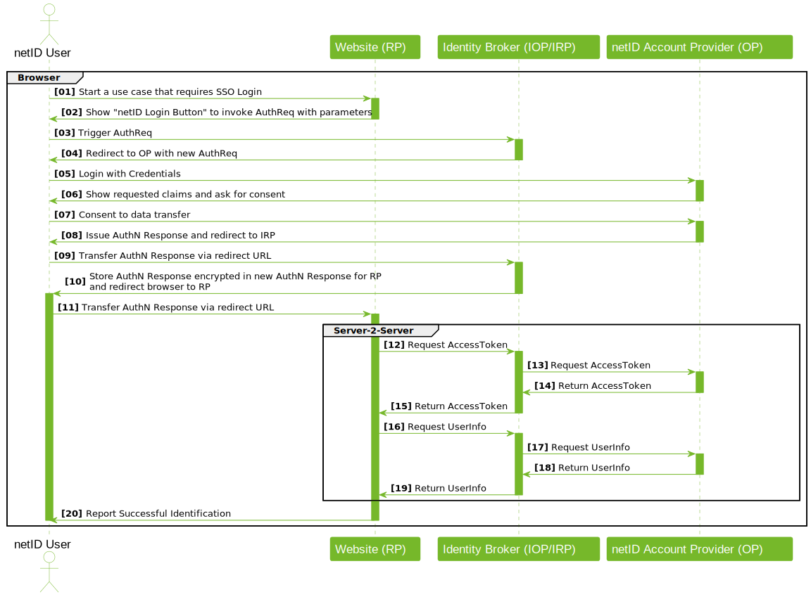

Single Sign-on Documentation¶
This documentation describes the federated Single Sign-on "netID", which allows digital services (netID Partners) to register and login netID Users based on their account at so called netID Account Providers. In order to acquire the necessary credentials to leverage this service please refer to the Developer Portal Documentation
Integration Guide¶
General Overview¶
The netID Single Sign-on implements the OpenID Connect standard as per the OpenID Connect Core 1.0 specification using the Authorization Code Flow.
Partners manage their details as well as service/clients settings in the netID Developer Portal. They can register/manage services and associated clients for these services (Website, App, Mobile, ...). Data transfer authorizations are managed service/client specific.
All the clients' communication takes place via EnID's central SSO broker. The SSO broker routes requests to the participating Account Providers, end users always authenticate to the Account Provider that manages their specific account, which is also where they authorize data transfer to a partners' service.
Clients specify during authentication calls which master data they request to be authorized by a user for transfer; if the user agrees, the client receives an id_token and a userinfo object as a JSON structure. id_token and userinfo objects also contain the end user's subject identifier (sub).
netID uses Pairwise Subject Identifiers to derive client specific subject identifiers during authentication requests. The subject identifier is derived using the host portion of the redirect_uri (Callback URL) and used to store data transfer authorization grants in the backend. That means clients of a specific service must use the same callback urls (in terms of host portion) during their authentication calls to avoid duplicated data transfer authorization / different subject identifiers between clients.
Claims and Scopes¶
Each time a partner initiates a login flow by calling the authorization endpoint he can define which master data the user should authorize to be transferred. For that purpose, the OpenID Connect/OAuth2 standard defines scope and claim mechanisms.
Every OpenID Connect request must always request the openid scope. Moreover, the master data required/asked for by the partner can be expressed in the form of essential claims with netID.
Once the user authorizes the transfer of that master data, this authorization is stored and not being asked for again unless the users revokes the authorization using the netID Privacy Center.
The following claims are supported by netID:
- gender - the end user's gender
- given_name - the end user's first name (or names)
- family_name - the end user's last name
- birthdate - the end user's date of birth
- email - the end user's email address
- email_verified - the verification status of the end user's email address
- address - physical mailing address, containing informations on postal code (ZIP), city or town, street address and country where the end user's address is located
The availability of these claims may, however, vary depending on the end user's account provider; in such cases un-supported claims are ignored and the client needs to handle this accordingly.
Important: please note!
Claims that are not requested as essential are ignored. The same applies to OIDC scope based claims requests, which are by definition also voluntary.
Example Endpoint Calls¶
Authorize¶
Requests to the authorize endpoint initiate the Single Sign-on process, clients identify themselves with their client_id and redirect_uri and specify which claims and scopes are to be requested. Some optional parameters are also supported.
The netID Broker endpoint for authorize requests is https://broker.netid.de/authorize. All endpoints and supported OpenID Connect features are also available here: https://broker.netid.de/.well-known/openid-configuration
Sample Calls are provided given both easy readable as well as in valid URL encoding. The encoding needs to be used for the redirect_uri as well:
Minimum Query¶
SSO without requesting any additional data
https://broker.netid.de/authorize?
response_type=code&
client_id=[clientID]&
redirect_uri=[redirect_uri]&
scope=openid
URL encoding
https://broker.netid.de/authorize?response_type=code&client_id=[clientID]&redirect_uri=[redirect_uri]&scope=openid
Query for “profile” information¶
Profile scope expressed in essential claims
https://broker.netid.de/authorize?
response_type=code&
client_id=[clientID]&
redirect_uri=[redirect_uri]&
scope=openid&
claims={
"userinfo":{
"birthdate":{"essential":true},
"gender":{"essential":true},
"given_name":{"essential":true},
"family_name":{"essential":true}
}
}
URL encoding
https://broker.netid.de/authorize?response_type=code&client_id=[clientID]&redirect_uri=[redirect_uri]&scope=openid&claims={"userinfo":{"birthdate":{"essential":true},"gender":{"essential":true},"given_name":{"essential":true},"family_name":{"essential":true}}}
Token¶
Token requests are carried out after the callback to the client in order to exchange the code provided for an access token for the userinfo endpoint. It is absolutely necessary that the code used remains unmodified.
The netID Broker endpoint for token requests is https://broker.netid.de/token. Credentials need to be provided via basic authentication
https://broker.netid.de/token?
code=[code]&
redirect_uri=[redirect_uri]&
grant_type=authorization_code
Example request per curl:
curl -v -u [user:pass] -X POST https://broker.netid.de/token -H 'content-type: application/x-www-form-urlencoded; charset=UTF-8' -d 'code=[code]&redirect_uri=[redirect_uri]&grant_type=authorization_code'
Userinfo¶
The access token is used to retrieve userinfo and id_token from the userinfo endpoint.
The netID Broker endpoint for userinfo requests is https://broker.netid.de/userinfo.
Implementation Details¶
Optional Parameters¶
The following request parameters are supported for initiating the SSO process and may be passed to the authorize endpoint. For Details please refer to the OIDC specification.
| Parameter | Description |
|---|---|
| prompt | login for requiring re-authentication of a user during the login process consent for requiring consent to be given again |
| max_age | in cases where time of authentication may not be too far in the past - elapsed time in seconds since the last time the End-User was actively authenticated |
| login_hint | to provide and email address in order to prevent the broker's user interface from being visible to the user and thus directly redirect to the relevant account provider |
| state | The value of this parameter is passed through the entire flow transparently and included when calling back to the redirect_uri. It may be used to recognize how authorize request and asynchronous response are associated in the client |
Detailed Call Sequence¶
The sequence of the calls is summarized as follows:

Detailed description of the sequence diagram
- The end user initiates a process on the client's site that involves the use of netID.
- At this point, the client generates a netID button for an authorize request and redirects the end user to the SSO broker.
- The SSO broker validates the client's authorize request.
- The SSO broker generates a new authorize request and redirects the user to the OpenID provider. For their part, the broker appears to the OpenID provider as a relying party client.
- The OpenID provider validates the SSO broker's authorize request and displays the login screen to the end user; the user logs in with the account provider.
- The OpenID provider shows an approval page to the end user on which all the data he or she is asked to allow transfer of is displayed.
- The end user agrees to provide the requested data.
- The OpenID provider generates an AuthN Response and redirects to the SSO broker.
- The SSO broker receives the AuthN Response from the OpenID provider.
- The SSO broker generates a new AuthN Response and redirects to the client's redirect_uri.
- The client receives the SSO broker's AuthN Response.
- The actual data query is initiated.
- The client requests the access token with the SSO broker using the Auth Code (from the AuthN Response) and the Client Credentials.
- The SSO broker requests the access token from the OP using the Auth Code (from the AuthN Response) and the Client Credentials taken from the client.
- The OpenID provider issues an access token, giving it to the SSO broker.
- The SSO broker uses the access token to generate a new access token, giving this one to the client.
- The client uses the access token with the SSO broker to request the userinfo object.
- The SSO broker uses the access token to request the userinfo object from the OpenID provider.
- The OpenID provider grants the userinfo object to the SSO broker.
- The SSO broker grants the userinfo object to the client.
- The client has now received the userinfo object.
Timing and Error Messages¶
If the authorize request fails, the respective error is provided with the callback to the redirect_uri.
With token requests, it's particularly important to ensure that the code provided is identical bit-by-bit to the one received in the callback to the redirect_uri, and that the credentials provided via basic authentication are correct.
Lifetimes¶
- Authorization codes are only valid for 30 seconds and may only be used once
- Access token are valid for 15 minutes for use with the userinfo endpoint and may be used multiple times
netID Button¶
The depiction of the netID button is explained in the styleguide.
Best Practices¶
It is largely up to the relying parties to decide where netID is to be incorporated in clients.
Typical cases involve the use of netID as a login or data enrichment mechanism.
As a login mechanism, for example, netID may be used like other SSO mechanisms (as well as alongside them) as an authentication alternative, or even used as the sole login method. Whether or not a local account is to be held in addition to the netID account is entirely up to the relying party. netID does not provide a classic session, but the SSO process is available via the authorize process at all times. An email address provided to the broker via a browser will be stored as a 1st-party cookie; the end user may decide whether to remain logged in with the account provider. The end user's approval for the transfer of master data will be sought only upon the first request for such data, unless the user revokes his or her approval; ideally, this allows SSO flows to be able to run even with interaction from the user.
If a relying party would like to also be able to handle authentication of end users independently of netID, it is advisable to ensure that mechanisms for merging or separating accounts are provided for. If local account representations with local credentials exist alongside netID, there should also be support processes for handling them; netID support processes only come into effect in connection with netID accounts themselves.
In terms of data enrichment, examples may include using netID during registration processes to make it easier for users to enter information, or as a source for addresses when customers are checking out with their shopping carts online. Whether the data provided is to be used only temporarily or whether it should persist is again left up to the relying parties to freely decide. Each time netID is triggered, the data obtained is up to date in relation to the information currently available to the account provider. With regard to local copies, it may be reasonable to repeatedly request updates and synchronize them. The relying party is to take the principles of data protection into account as they pertain to local data retention.
Ideally, data enrichment processes should be initiated in those places where the data is actually needed. This helps to optimize conversion rates while achieving a high degree of data minimization.
One thing to be aware of is the verification status of email addresses: if an email address has already been verified with netID, a new request from the relying party to verify the email address is, generally speaking, unnecessary and may cause confusion on the part of the end user. Those netID accounts associated with account providers that are, for their part, email providers, are verified from the outset. If such an email account is deleted, not only does the end user lose the ability to use netID, but all support processes based on that email address will come to nothing.
Security Information¶
- All communication with netID must be secured by TLS. This also applies to all URLs entered in the developer portal.
- netID exclusively supports the Authorization Code Flow, so that id_token is only transferred in TLS-secured back-end to back-end communication. Currently, the only token signature supported is none.
Use of SDKs¶
There are a large number of OpenID Connect client libraries available in many different language environments. Below, several examples will be given, along with tips for using them.
Many client libraries are listed at https://openid.net/developers/libraries/, and others are easy to find.
General¶
Regardless of the choice of environment, it's possible to do the following preliminary experiments:
- In the developer portal for the partner, create a service, request approval for it, and then create a client for it
-
When choosing which URLs to use, it's possible to generate locally applicable test environments by making an entry in the hosts file of a developer workstation at the endpoints given for service and client and creating and using self-signed certificates.
Example "Entry in hosts"
127.0.0.1 www.democlient.de
Example "Creating a self-signed certificate"
openssl req -x509 -nodes -days 365 -newkey rsa:2048 -keyout key.pem -out cert.pem -
Here, for the Common Name give the host name of the environment you want; so, in this case: www.democlient.de. Using the Client Credentials from the developer portal, the local host entry, and the certificate with the key, it's possible to run through the netID requests.
- When testing with browsers, it's a good idea to use private windows; otherwise cookies left behind from previous run-throughs may cause confusion. to top
Examples¶
PHP In PHP it's possible to use the package https://github.com/jumbojett/OpenID-Connect-PHP. However, some adjustments are necessary, since netID always uses none for the token signature algorithm in the Authorization Code Flow.
Installation according to instructions is no problem. The package derives the redirect_uri from its own URL; here, the position of the script in the path of the web server can either be used as redirect_uri when creating the client or configured accordingly in the web server using rewrite rules.
The following minimal diff makes OpenIDConnectClient.php netID-compatible:
844a845,848
> $signature = base64url_decode(array_pop($parts));
> if (false === $signature || '' === $signature) {
> throw new OpenIDConnectClientException('Error decoding signature from token');
> }
874,877d877
< // netID has 'none'
< case 'none' :
< $verified=true;
< break;
A simple sample client may then look like this:
<?php
/**
*
* Copyright MITRE 2012
*
* OpenIDConnectClient for PHP5
* Author: Michael Jett <mjett@mitre.org>
*
* Licensed under the Apache License, Version 2.0 (the "License"); you may
* not use this file except in compliance with the License. You may obtain
* a copy of the License at
*
* http://www.apache.org/licenses/LICENSE-2.0
*
* Unless required by applicable law or agreed to in writing, software
* distributed under the License is distributed on an "AS IS" BASIS, WITHOUT
* WARRANTIES OR CONDITIONS OF ANY KIND, either express or implied. See the
* License for the specific language governing permissions and limitations
* under the License.
*
*/
require __DIR__ . '/vendor/autoload.php';
use Jumbojett\OpenIDConnectClient;
// specify ClientID und secret!
$oidc = new OpenIDConnectClient(
'https://broker.netid.de/',
'example-clientid',
'example-secret'
);
// if the default redirect_uri is not to be used, a custom value can be set here:
// $oidc->setRedirectURL('https://clientexample.org/callback');
// then however a URL-rewrite is necessary, as for example with mod_rewrite from apache:
// RewriteEngine On
// RewriteRule "^callback(.*)" "/client_example.php$1"
$oidc->authenticate();
$sub = $oidc->getVerifiedClaims('sub');
?>
<html>
<head>
<title>Example OpenID Connect Client Use</title>
<style>
body {
font-family: 'Lucida Grande', Verdana, Arial, sans-serif;
}
</style>
</head>
<body>
<div>
netID login successful, the Subject Identifier is: <?php echo $sub; ?>
</div>
</body>
</html>
Javascript One highly recommended JavaScript implementation (node.js) of an OpenID Connect relying party can be found here: https://www.npmjs.com/package/openid-client
Java Spring Security examples for Java:
- GitHub:mitreid-connect/simple-web-app
- GitHub:eugenp/tutorials/tree/master/spring-security-openid
Rust A good OpenID Connect relying party client for Rust can be found here: https://docs.rs/crate/oidc/0.2.0.
Go For go the package GitHub:coreos/go-oidc makes a netID login possible. The package may be installed here:
go get github.com/coreos/go-oidc
There is no explicit support for entering claims, essential or otherwise.
The simple example client netid.go first needs to be edited before Client Credentials, host name, and certificates may be entered, after which it can be run using:
go run netid.go